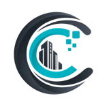
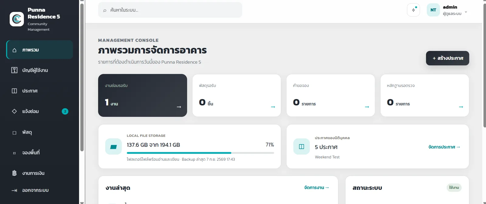
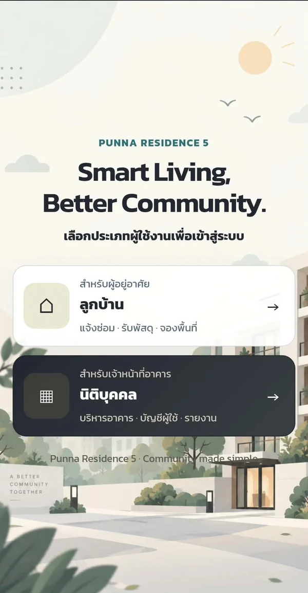
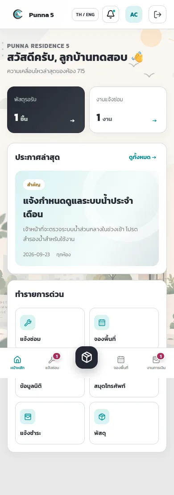

CeroSoft
cerosoft.netFrom zero to solution. CeroSoft starts from the business problem, not the technology, and builds software for SMEs, condominiums and local service businesses that still run on Excel, chat groups and paper.
Custom softwareBusiness automationWeb solutionsSystem integrationSupport and maintenance
CondoMate: condominium management system
One system for residents and the management office: repair requests, parcel tracking, shared-space booking, announcements, finance and reports.
- Node.js server and API with sign-in, role-based access and file uploads
- Two deployment modes: SQLite on-premises or PostgreSQL online on Vercel
- Installable web app for residents, with barcode scanning for parcels
- Backup and restore tooling, plus Playwright end-to-end tests
Company website
- Bilingual Thai/English site built with React 19, TypeScript and Vite
- Hosted on Vercel with Cloudflare DNS; contact form sent through a serverless function and Resend


